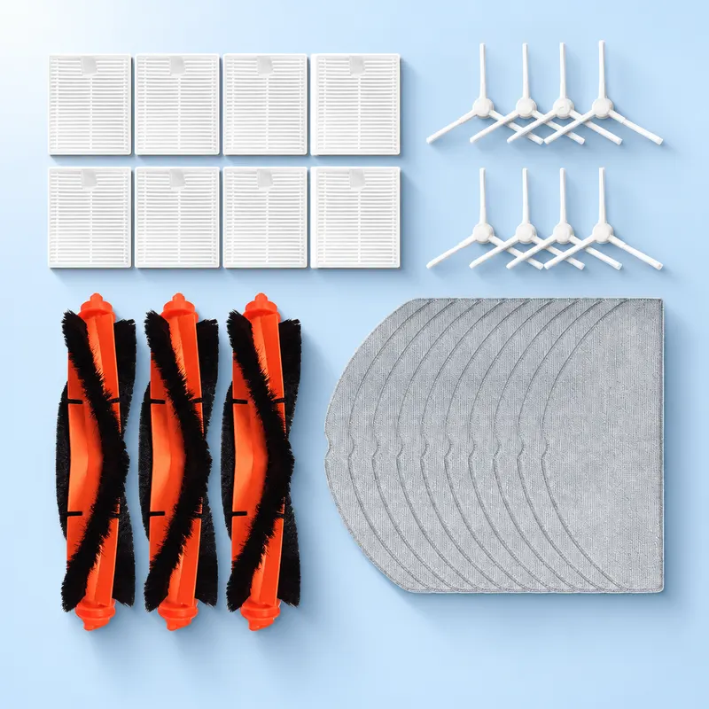
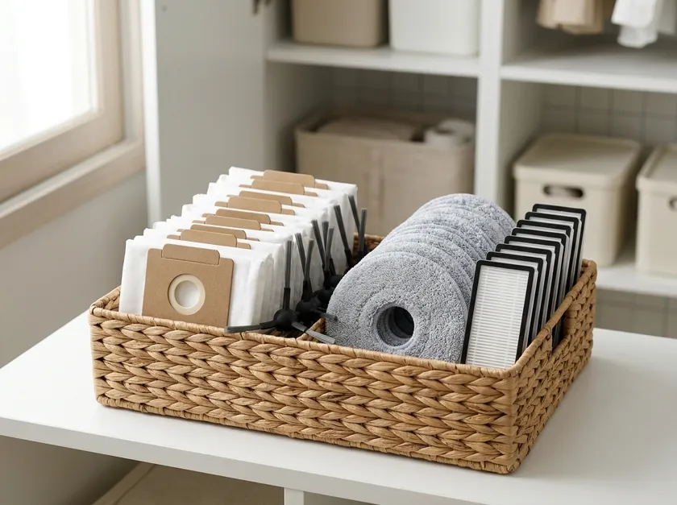

나르왈 (Narwal)
원룸·서재 본체 먼지통 비우는 샤오미 S20 필터 미세먼지 눈막힘 관리법
글·구성: 제이상점 · 기종별 1:1 호환 실물 점검 · 교체 주기 비교표 · 스마트스토어 패키지 안내

핵심 관리 · 선택 체크포인트
- 자동 먼지 비움 스테이션 없이 본체 먼지통을 직접 비워 쓰는 콤팩트 로봇청소기 샤오미 S20은 먼지통 내부 주름 필터가 막히면 흡입력이 바로 줄어들기 때문에 필터 교대 관리가 무엇보다
- 샤오미 S20(컴팩트 본체형) vs 스테이션형 소모품 구성 차이표: 더스트백 없이 본체 소모품 4종에 집중된 S20 전용 구성을 확인해 보세요.
- 보유 모델명이 샤오미 S20(또는 S20+)인지 먼저 확인한 뒤 상세페이지에서 알맞은 옵션을 선택해 주세요.
- 세탁실 세라믹 트레이 건조와 서랍 캐디 소분 수납: 더스트백이 없는 구성이라 작은 서랍 캐디 한 칸이나 바구니 하나만 있어도 1년치 필터와 걸레, 브러시를 깔끔하게 수납할 수 있습니다.
- 물세척 후 24시간 교대 건조를 위해 예비 부품이 필요하시다면 네이버에서 ‘제이상점 샤오미 로봇청소기 S20’을 검색하시거나 제이상점 샤오미 로봇청소기 S20 1년 소모품 패키지 페이지에서 기간별 포함 수량을 미리 확인해 보세요.
실물 부품 디테일 · 관리 구성 이미지



부품 규격 · 점검 기준표
| 부품 구분 | 샤오미 S20 전용 규격 | 집중 점검 및 관리 포인트 |
|---|---|---|
| 본체 먼지통 헤파필터 | 컴팩트 직사각 주름 필터 (더스트백 미사용 기종) | 흡입력 직결 부품이므로 2~3개를 교대 건조하며 자주 교체 |
| 메인브러시·3암 사이드브러시 | 오렌지 V자 브러시 + 3갈래 사이드브러시 | 책상·의자 다리 주변 주행 후 브러시 모 변형 및 머리카락 점검 |
| 전용 물걸레 패드 | 본체 하단 물걸레 플레이트 부착용 패드 | 청소 직후 분리해 손세탁·건조(젖은 채 방치 금지) |
💡 교체 주기가 겹치는 필터·브러시·물걸레·더스트백은 단품 배송비를 여러 번 내기보다 샤오미 S20 기간별 세트(3개월·6개월·1년)로 미리 구비해 두면 물세척 후 24시간 교대 건조까지 끊김 없이 관리할 수 있습니다.
자주 묻는 질문 (FAQ)
Q. 서재 본체 먼지통 비우는의 본체 먼지통 헤파필터 규격과 관리 기준은 무엇인가요?
A. 컴팩트 직사각 주름 필터 (더스트백 미사용 기종) 규격을 사용하며, 흡입력 직결 부품이므로 2~3개를 교대 건조하며 자주 교체 기준으로 점검·교체하면 청소 효율을 안정적으로 유지할 수 있습니다.
Q. 서재 본체 먼지통 비우는의 메인브러시·3암 사이드브러시 규격과 관리 기준은 무엇인가요?
A. 오렌지 V자 브러시 + 3갈래 사이드브러시 규격을 사용하며, 책상·의자 다리 주변 주행 후 브러시 모 변형 및 머리카락 점검 기준으로 점검·교체하면 청소 효율을 안정적으로 유지할 수 있습니다.
Q. 서재 본체 먼지통 비우는의 전용 물걸레 패드 규격과 관리 기준은 무엇인가요?
A. 본체 하단 물걸레 플레이트 부착용 패드 규격을 사용하며, 청소 직후 분리해 손세탁·건조(젖은 채 방치 금지) 기준으로 점검·교체하면 청소 효율을 안정적으로 유지할 수 있습니다.
제이상점 1:1 검수 추천 패키지 · 구매 안내
![[호환] 샤오미 X20+ 소모품 물걸레 더스트백 브러쉬 필터 제이상점 1년 패키지](../../assets/img/xiaomi-x20-plus-product-e55d63e6.webp)
함께 많이 찾는 보충 구성
대표 구성 참고가 56,400원대 (옵션·쿠폰별 스마트스토어 결제 화면 기준)
1년 세트 (세제 미포함)6개월 세트 (세제 미포함)3개월 세트 (세제 미포함)
☑️ 주문 전 확인해 두면 좋은 제이상점 안심 포인트
· 기종별 1:1 전용 규격 검수: 모델명·연식에 맞는 호환·정품 구성을 검수해 오주문 불안을 줄였습니다.
· 해외직배송 미리 주문 팁: 중국 구매대행·해외직배송 상품이므로 마지막 여분 1개를 꺼내 쓰는 시점에 개인통관고유부호와 함께 여유 있게 주문해 두시면 훨씬 경제적인 비용으로 끊김 없이 교체하실 수 있습니다.
· 기종별 1:1 전용 규격 검수: 모델명·연식에 맞는 호환·정품 구성을 검수해 오주문 불안을 줄였습니다.
· 해외직배송 미리 주문 팁: 중국 구매대행·해외직배송 상품이므로 마지막 여분 1개를 꺼내 쓰는 시점에 개인통관고유부호와 함께 여유 있게 주문해 두시면 훨씬 경제적인 비용으로 끊김 없이 교체하실 수 있습니다.
📖 더 많은 가정 내 사용 스토리와 상세 후기가 궁금하시다면
📱 네이버 블로그 모바일 원문 보기 ↗